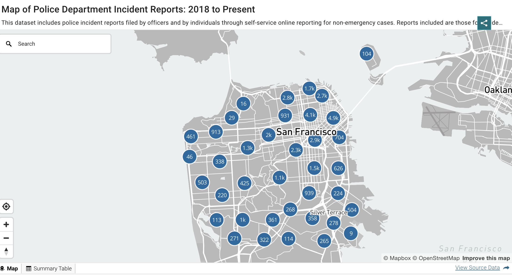

Data gathering method
The methods:
Python API from Socrata:
Police Department Incident Reports: 2018 to Present
gis data like sf housing price chart
Example of Map of Police Department Larcenry Incident Reports:

About me